Trust Before Use: When Do World-Model Quality Metrics Predict Control?
Under review at ICLR 2027
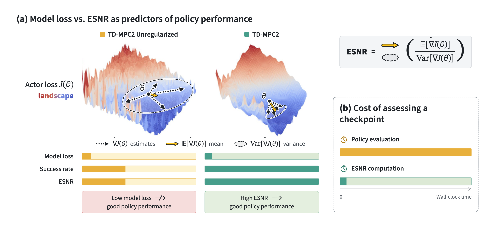
TL;DR
Prediction loss and video fidelity can mislead about a world model's usefulness for control; the signal-to-noise ratio of gradients through the model is a cheap training-time check.
Abstract
World models are being scaled to billions of parameters and fine-tuned on robot data in the hope of unlocking new skills, yet it remains unclear which properties of a world model make it useful for downstream control. Practitioners typically judge world models by prediction loss or video fidelity, and learn whether a model is useful only after training and evaluating a policy, a slow and costly loop. We ask when world-model quality metrics predict control. We find that prediction loss and video fidelity can mislead: a world model with lower prediction loss can yield a worse policy, and a world-action model with far worse video fidelity can control without a detectable loss in success. We study the expected signal-to-noise ratio (ESNR) of policy gradients computed through a world model, which measures the gradient signal the model offers to policy extraction and can be computed during training without a trained policy or environment interaction. Across policy-extraction methods and world-model architectures on DMControl and Meta-World, ESNR tracks downstream performance more closely than prediction loss, and it tracks the planning performance of large pretrained world models at a fraction of the evaluation cost. On a 6B-parameter world-action model trained by behavior cloning, a gradient signal-to-noise ratio of the action loss orders the four model variants exactly as closed-loop success does, whereas LPIPS and SSIM rank the most successful variant last.
Results
Prediction loss and LPIPS can mislead
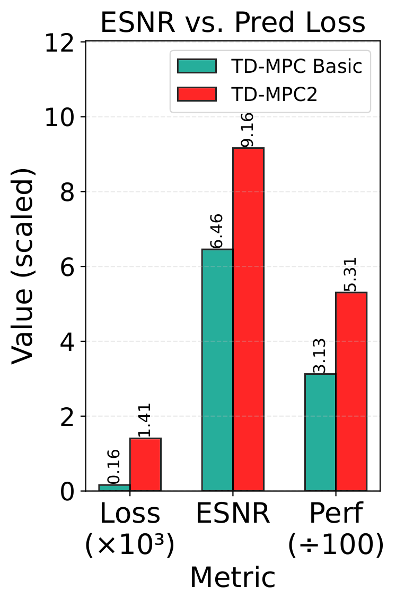
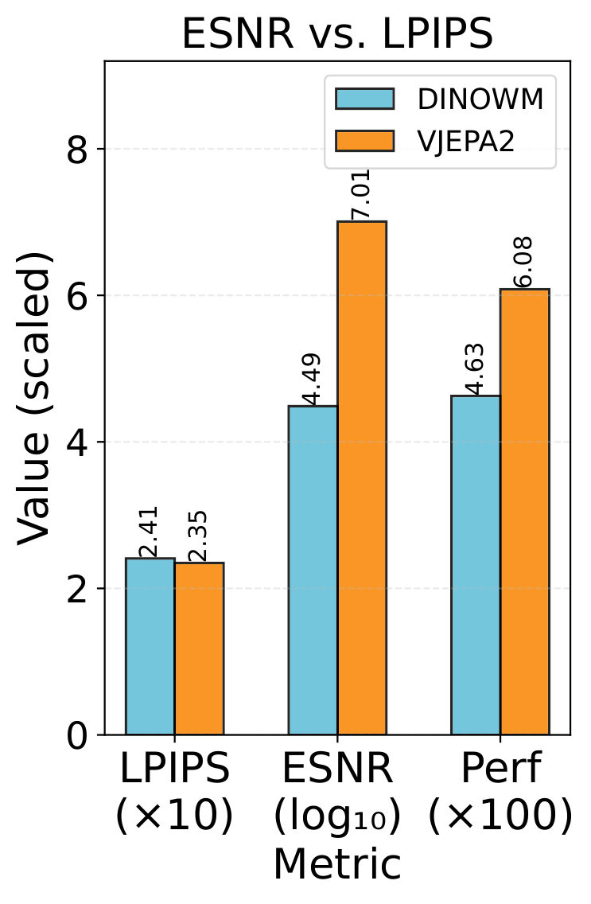
Spearman correlation with downstream performance
| Setting | Metric | Corr. w/ perf. |
|---|---|---|
| RL | ESNR | +0.57 |
| Pred. loss | −0.52 | |
| Planning | ESNR | +1.00 |
| LPIPS | −0.33 |
TD-MPC2 basic reaches a lower prediction loss than the more strongly regularized TD-MPC2, yet yields worse downstream performance on all Meta-World tasks; ESNR ranks the two world models in line with their policy performance. For the larger DINO-WM and VJEPA2 world models on 3 tabletop manipulation tasks, LPIPS does not reliably separate the models, whereas ESNR identifies the one that produces the best policy. RL: policy-learning tasks; Planning: planning with a frozen world model.
ESNR across policy-extraction methods and world-model architectures
Across policy-extraction methods
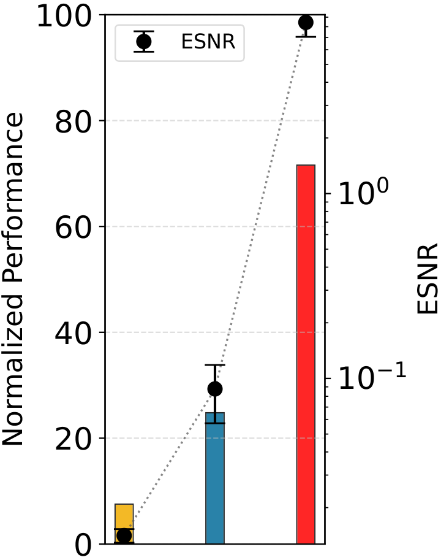
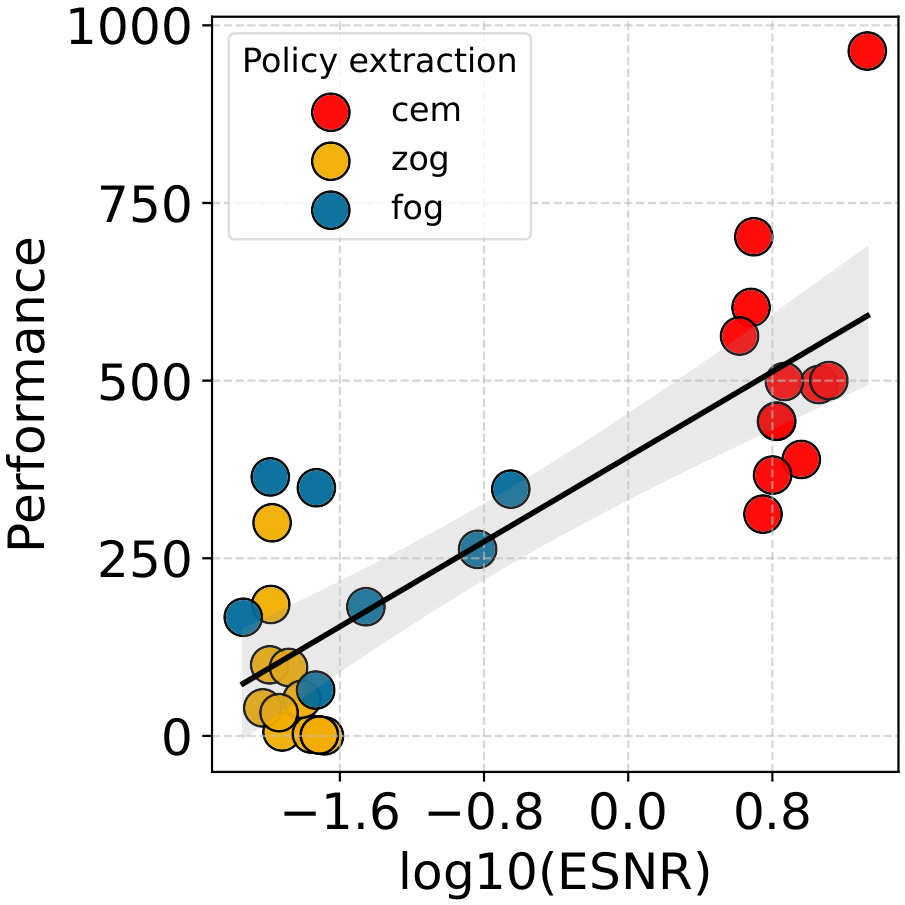
Across world-model architectures
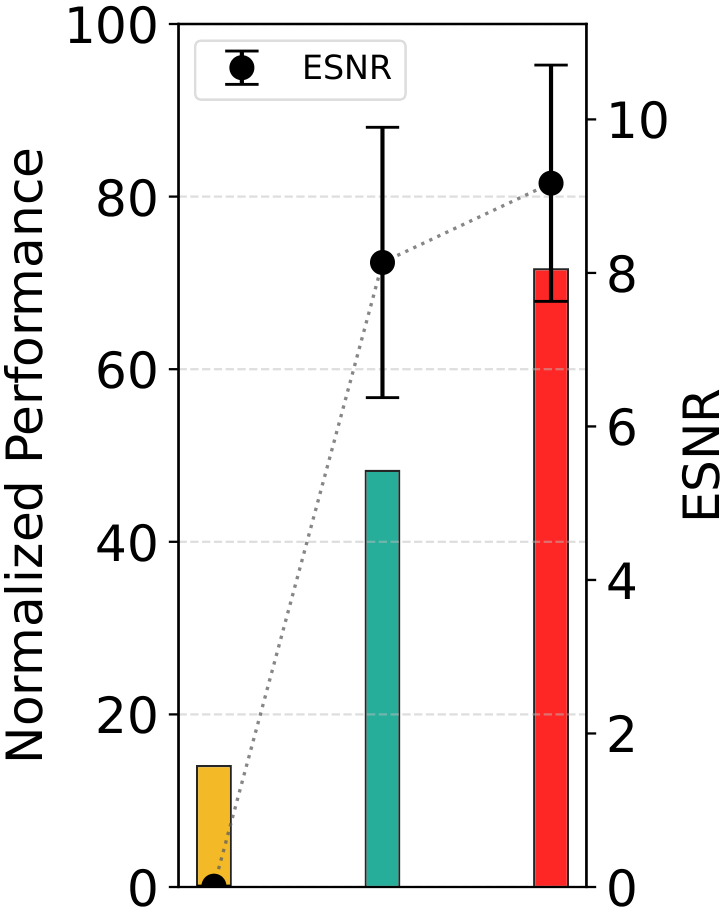
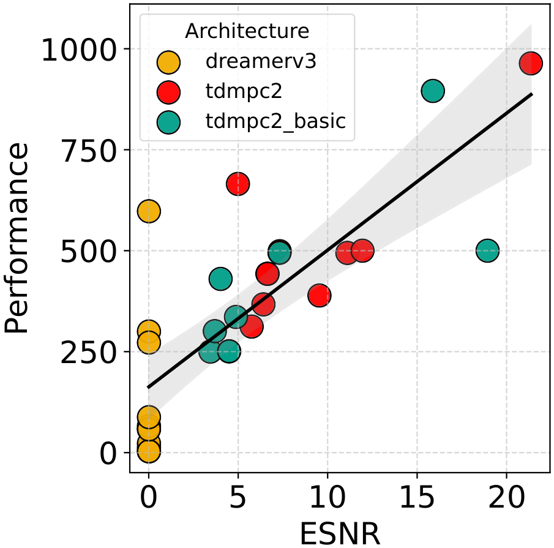
| Experiment | Spearman |
|---|---|
| ↔ π-extraction methods | 0.79 |
| ↔ WM architectures | 0.80 |
On 12 DMControl and Meta-World tasks, with a fixed TD-MPC2 world model, ESNR tracks the returns of MPC with CEM, first-order (FoG) and zeroth-order (ZoG) policy gradients; CEM attains both the highest ESNR and the best performance. Across architectures, DreamerV3 underperforms on most tasks and shows the lowest ESNR, while TD-MPC2 achieves higher returns and higher ESNR than the less regularized TD-MPC2 basic. ESNR error bars are 95% bootstrap CIs; bar-chart performance is normalized and averaged over all tasks.
Large pretrained world models
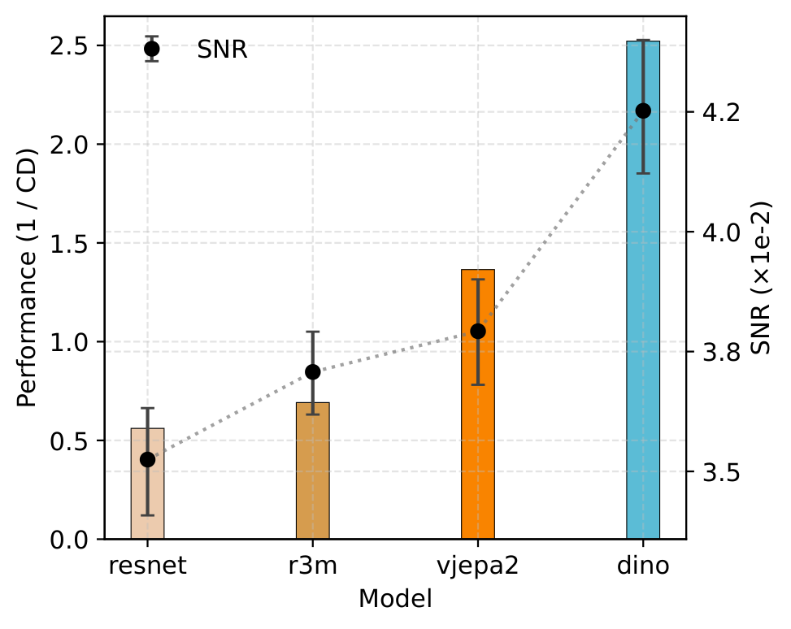
Wall time to evaluate ESNR vs. full evaluation
| Method | ESNR time (hrs) | Eval time (hrs) |
|---|---|---|
| ResNet | 0.003 | 0.70 |
| R3M | 0.003 | 2.21 |
| DinoWM | 0.027 | 0.72 |
| V-JEPA2 | 0.358 | 4.58 |
Four pretrained world models (ResNet, R3M, DINO-WM, VJEPA2) are fine-tuned offline and used for MPC with CEM on the SoftGym rope-manipulation task (50 environment steps, 10 seeds). Performance is 1/CD, where CD is the Chamfer distance to the goal (lower CD is better). Planning performance and ESNR are highly correlated, and ESNR takes a fraction of the time that a full evaluation does.
A 6B-parameter world-action model (Fast-WAM)
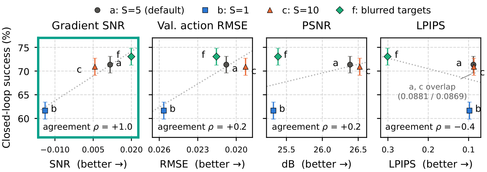
Fast-WAM (6.0B parameters) is fine-tuned on 5,500 demonstration episodes from 10 RoboTwin 2.0 tasks. The four variants differ only in the video training objective: a uses the default timestep shift S = 5, b uses S = 1, c uses S = 10, and f keeps S = 5 but trains on Gaussian-blurred future frames. Success is measured over 2,000 episodes per model at the final checkpoint (step 2,780), with 95% bootstrap CIs; ρ is the sign-adjusted Spearman correlation with success. The action-loss gradient SNR is the only metric that orders all four models as control does (ρ = +1.0); validation action RMSE and PSNR reach +0.2, and LPIPS −0.4.
“In video fidelity the variants rank c > a > b > f on LPIPS and SSIM, whereas their success rates rank f > a > c > b: the variant with the best-looking predictions is third in success, and the one with the worst is first.”
Toy example: a ball and a wall
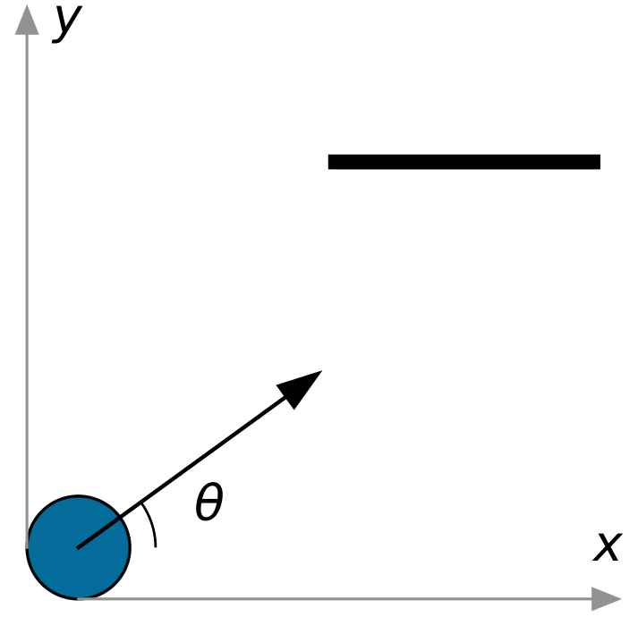
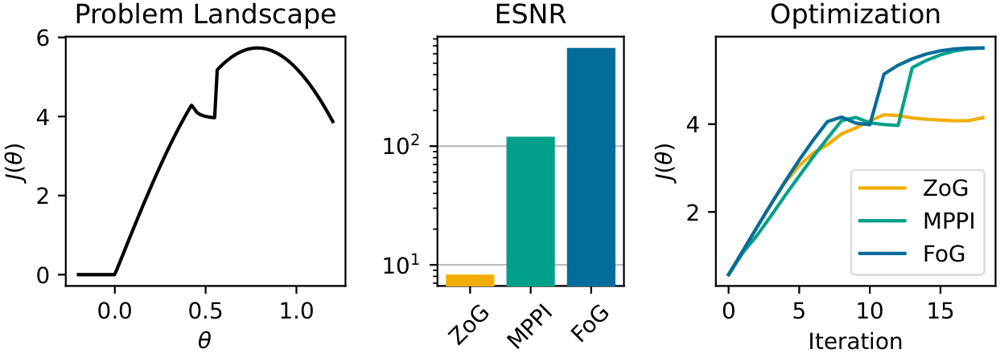
A ball is shot at angle θ to maximize distance traveled, and a wall introduces a discontinuity in the objective. ESNR over θ ∈ [−0.2, 1.2] ranks the gradient estimators (ZoG, MPPI, FoG) and predicts optimization speed: estimators with higher ESNR ascend faster.
Rollouts
Planning rollouts on the SoftGym rope-manipulation task, in which a 7-DoF arm must move a deformable rope into a goal configuration, using MPC with CEM through fine-tuned large pretrained world models.
Rope manipulation
CEM planning with the ResNet world model
Rope manipulation
CEM planning with the R3M world model
Rope manipulation
Goal configuration
BibTeX
@inproceedings{anonymous2027trust,
title={Trust Before Use: When Do World-Model Quality Metrics Predict Control?},
author={Anonymous},
booktitle={Submitted to ICLR 2027},
year={2027}
}